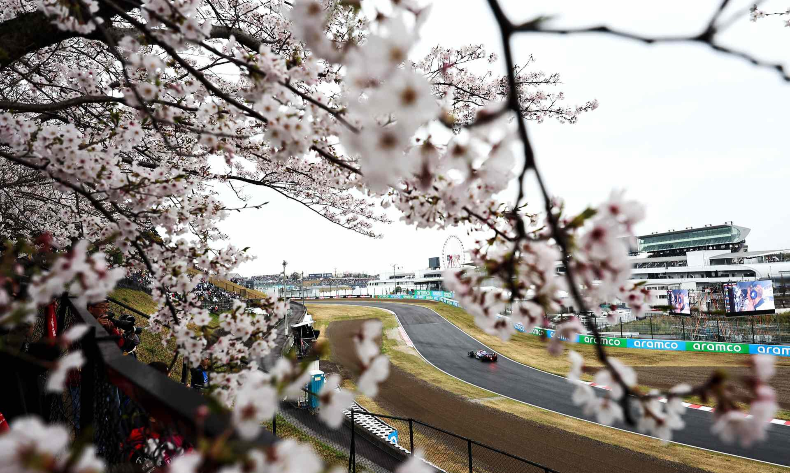

Grande Prémio do Japão

Grande Prémio do Japão – 2026
Resultados 2025
Pole: Max Verstappen – 1:29.000
Pódio: 1º Lewis Hamilton, 2º Charles Leclerc, 3º Sergio Pérez
Volta mais rápida: Lando Norris – 1:32.500
Meteorologia: Sol, 30°C